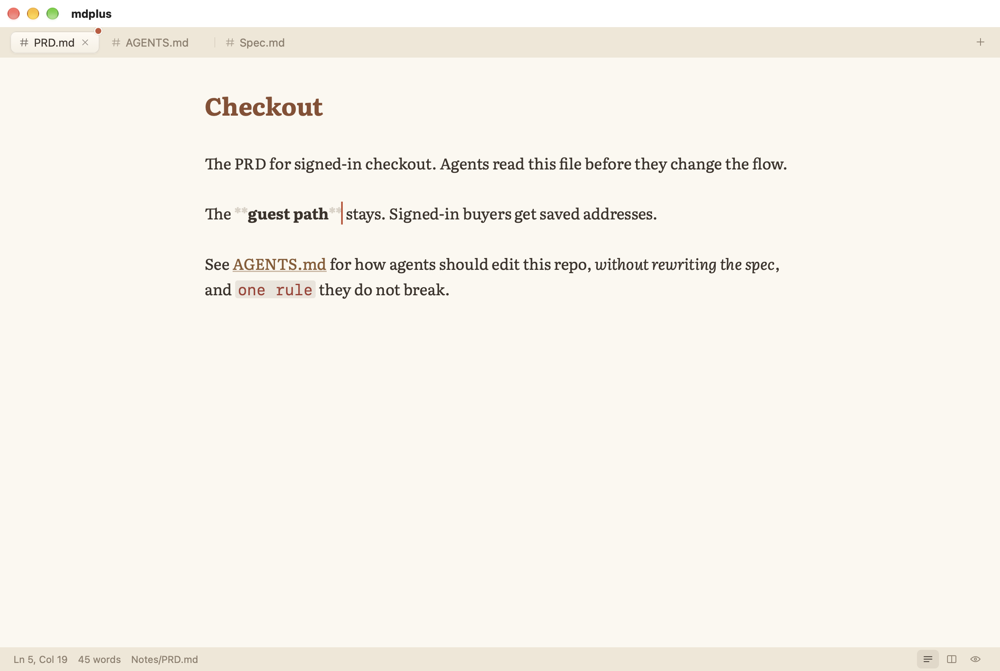
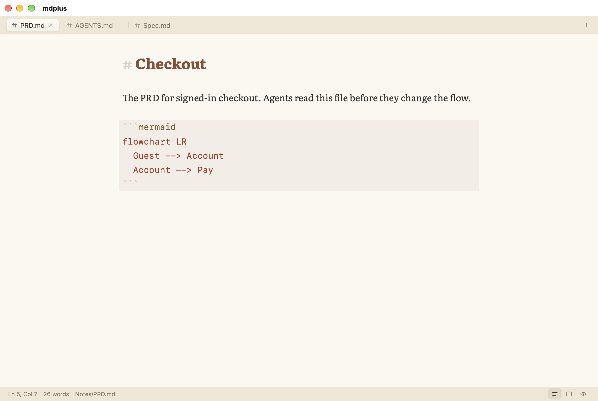
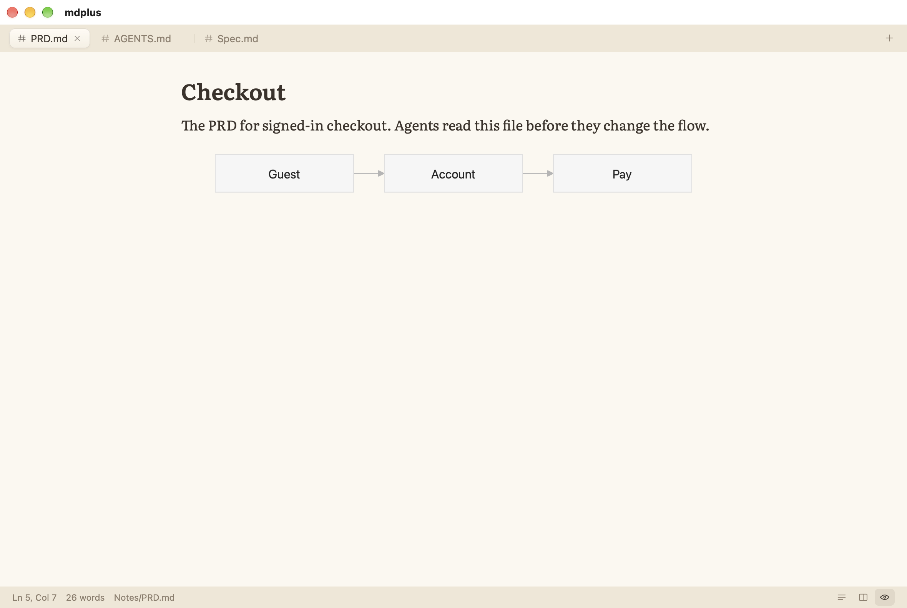
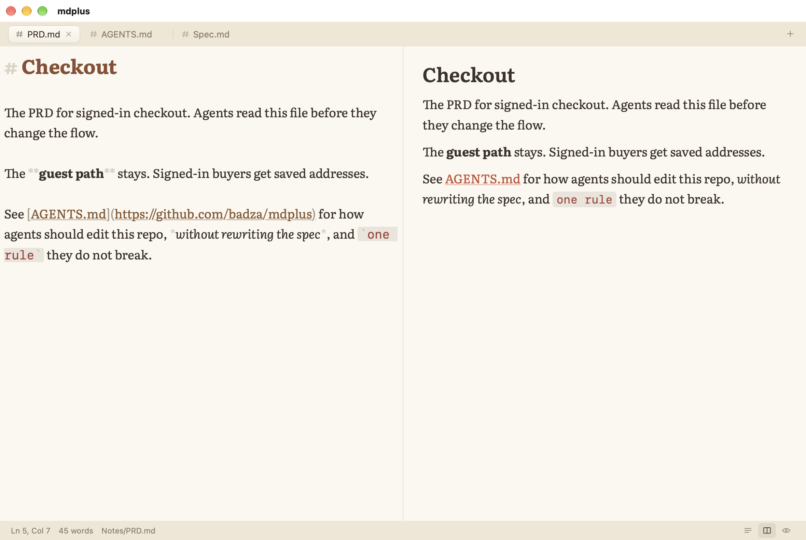
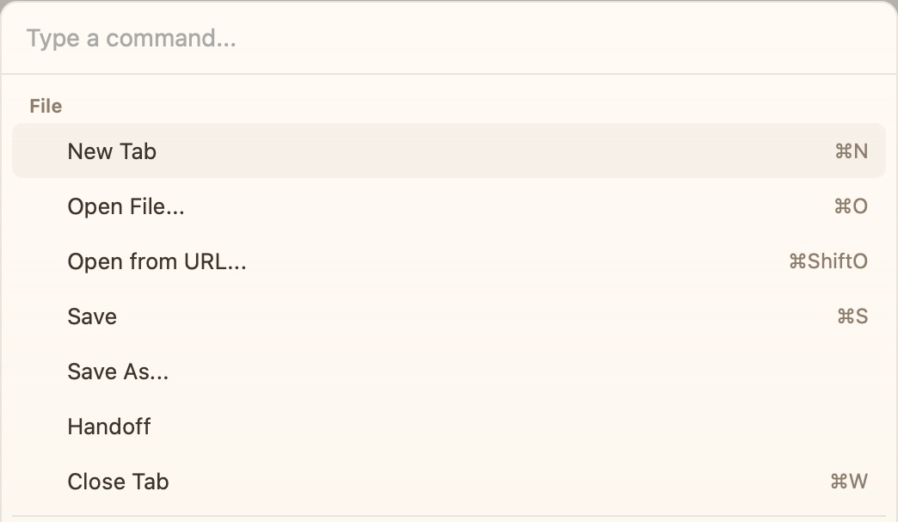
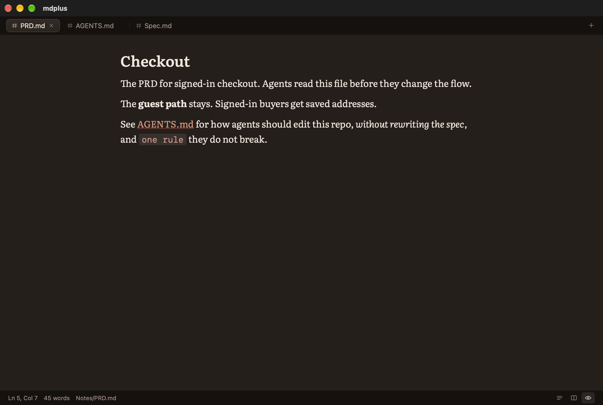

A focused markdown editorfor PRD.md, Spec.md, PLAN.md, README.md, AGENTS.md, AGENTS.override.md, CLAUDE.md, CLAUDE.local.md, GEMINI.md, SKILL.md, JULES.md, CONVENTIONS.md, and copilot-instructions.md.
For those files, and the rest of your markdown. Free for Mac, Windows, and Linux.
The screen shows the document. The line you are editing shows the markdown, and the file stays markdown. A red mark on the tab means it is not saved yet.

The diagram is in the file.
The flowchart is a mermaid block in the markdown, not a picture someone exported. Move the slider to see this note as a page.


The markdown next to the page.
Split puts the file on the left and the document on the right. Every mark stays visible, so a bad link or a wrong heading is easy to find.

The command palette.
Open a file from disk or from a link, save it, or hand it off. Handoff sends the open file, or a selection, to Claude, Grok, Codex, or another agent you already run.
Auto save writes a file that already has a path. Next launch can reopen the same tabs.

The same document, in the theme you want.
Auto follows your system. Click a theme to see this note in it.

One window.
Notepad++ was the role model. One window, the file in front of you, and nothing else in the way.
It uses the system web view, with no account, no plugin host, and no second browser.
Hand the open file, or a selection, to Claude, Grok, Codex, or the agent you already run.